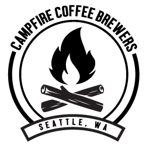
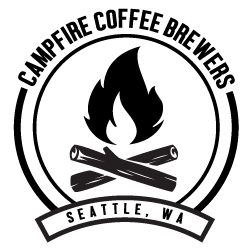

Our Mission Statement
"From the tent to the fire, it's our coffee you require!"
 

"From the tent to the fire, it's our coffee you require!"

Our beans are organically grown and locally sourced. Our beans are roasted daily for the freshest cup! We currently have 5 local stores accross Seattle, however many customers buy by the bag to make it at home or on a camping trip.
Nothing beats enjoying the night sky, with a hot cup of campfire coffee in your hands. Below are links to recommended sites to get gear.